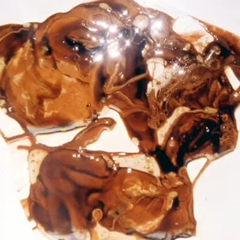
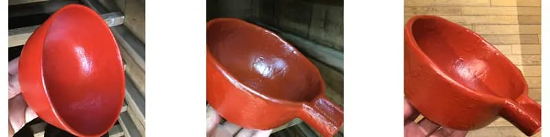
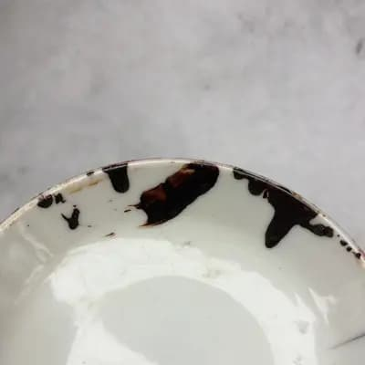

Notice of Price Revision
The text is due to an increase in the price of logs.
In 1996, the national production of raw lacquer was 3,190 kg.
In 1996, the national production volume of raw lacquer was 3,190 kg, and 16 Joboji members
of the Japan Uruushi Scratching Technique Preservation Association were members.
In 2016, the national production volume of raw lacquer was 1,250 kg, and there were 26 Joboji lacquer scrapers.
The consumption tax will increase next year.
Price increases are not welcomed by customers who purchase the bowls.
I'm worried again.
Poor quality lacquer
2018-06-07T11:00+09:00

A lacquer that was bought mixed with water.
When I was at Joboji, some people were collecting lacquerwhen the dew was still falling before dawn.
Even on rainy days, I scratched the lacquer to increase the moisture content.
After a year or two, such lacquer will naturally separate and look like the picture.
In Kiso, there is a technique called Kusazuri.
We mix water with raw urushi lacquer and do Suri urushi for polishing.
Since it is weaker than raw lacquer alone, it is easy to polish off and the shine is improved.
However, lacquer scraper don't mix the lacquer with water.
Good quality lacquer
2018-04-22T18:00+09:00

The difference in the finish of the vermilion lacquer .
Left side. This year, it was painted with the lacquer taken last year. As soon as it dries, the front and back are finished the same.
The middle. Painted with lacquer from the year before. The color of the inside is not good right after it dries.
Right side. The front and back will be the same color before the exhibition.
This kind of coloration is not seen in Chinese lacquer. In order to make the lacquer look the same as domestic lacquer, a higher percentage of pigment is used or transparent oil is mixed with the lacquer.
The paint film becomes weaker and more prone to discoloration, odor, and other problems.
For more information on lacquer planting and scraping techniques, see "Urushi no hanashi" by Gonroku Matsuda, Iwanami Shinsho.
2017. Japanese lacquer production and refinement" was selected as a candidate for inclusion in the UNESCO Intangible Cultural Heritage list. The first planting site of the Japan Cultural Lacquer Association and the executive office of The Japan Urukisaki Technique Preservation Association is located in the Joboji area.
This is because the local people have been protecting it without interruption since before the Edo period. It is a shame that Hita's hemp has been lost.
A dry lacquer bowl from the 2011 earthquake
2018-03-11+09:00
My everyday bowl that fell out of the cupboard during the earthquake.
I still use it every day without repairing it.
This is a traditional soot-black (from Fukushima Prefecture).
I think only the nuclear power accident hadn't happened. We changed our power company from TEPCO.
I are very happy with the quality of last year's Joboji lacquer, which is the best in a long time.
I am making my own "Arasowan" with hometown Kyushu's hemp .
I can't wait to eat the delicious rice from Saitama and miso soup with wakame seaweed from the Sanriku coast.
Domestic Lacquer: Repairing National Treasures and Important Cultural Properties
2018-02-28+09:00

February in Saitama City was like winter in Joboji with a record-breaking cold of -10℃.
At that time, I tried to dry the Sakari lacquer I had picked last year on the outdoor balcony.
I put raw lacquer on the plate at night, and the next morning it was completely dry.
This lacquer, purchased from the Joboji Lacquer Production Association, may be used for architectural repairs.
It is essential that the lacquer be applied in the same year that it is collected.
We have not experimented with drying up on site during the long, continuous winter in Joboji.
I believe that it does not matter the region or the lacquer scraping technique if the same kind wood is available for raw lacquer with this characteristic.